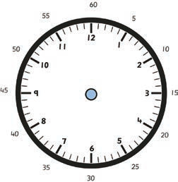
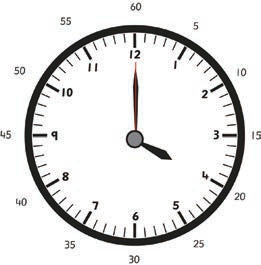

Example 1
Draw an analogue clock face that shows 04:00.
Steps:
1.
Take a circular object like a 200 shilling coin.
2.
Use the circular object and a pencil to draw a circle on the paper.
3.
Divide the circle into 12 equal parts. Put twelve thick marks on the circle to form a clock face.
4.
Write the numbers 1, 2, 3 up to 12 facing the thick marks you have placed as shown in the following figure.

5.
Draw an hour hand arrow pointing at number 4 from the centre of the circle.
6.
Draw a minute-hand arrow pointing at number 12 from the center of the circle.
7.
Draw a second-hand arrow pointing number 12.

8.
The clock face shows 4 O’clock.